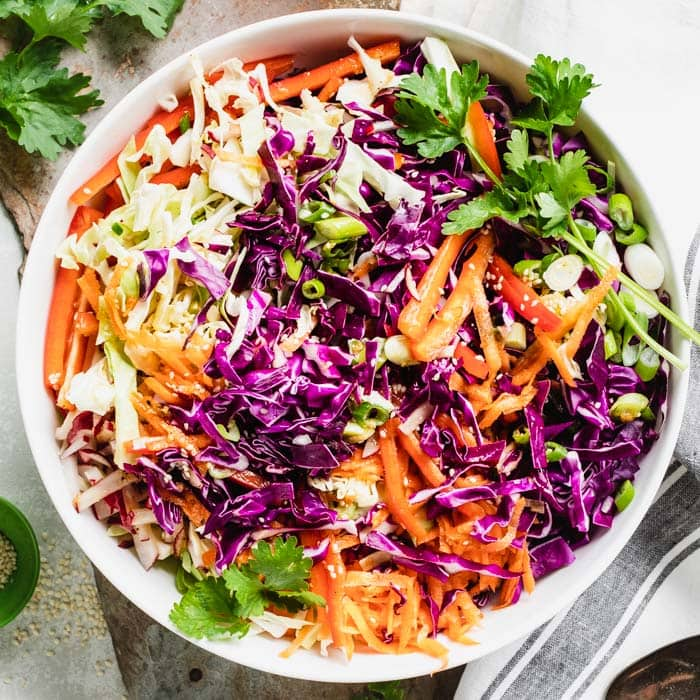

Asian slaw salad is a delicious and healthy dish that combines crunchy vegetables with a tangy and flavorful dressing. The salad typically consists of a mix of thinly sliced green and red cabbage, shredded carrots, sliced bell peppers, scallions, fresh cilantro, and mint, all of which are tossed together in a large bowl. The dressing is a key component of the dish, as it brings all the flavors together. The dressing is typically made with soy sauce, rice vinegar, honey, grated fresh ginger, minced garlic, vegetable oil, and sesame oil.